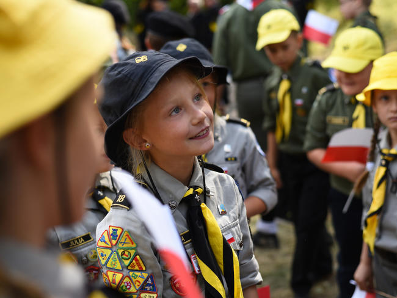

Chorągiew Śląska ZHP

Początki działalności harcerskiej na Śląsku
Harcerstwo śląskie w okresie międzywojennym.
Działalność po II wojnie światowej.
| Chorągiew Śląska ZHP | |
| Rodzaj jednostki | Chorągiew |
| Jednostka nadrzędna | Główna Kwatera ZHP |
| Jednostki podległe | 34 hufców |
| Rok powstania pierwszych drużyn | 1911 |
| Adres siedziby | al. Harcerska 3b 41-500 Chorzów |
Chorągiew Śląska współcześnie
| Hufiec | Adres | Komendant |
| Beskidzki | Bd. | Bd. |
| Bytom | Bd. | Bd. |
| Chorzów | Bd. | Bd. |
| Chrzanów | Bd. | Bd. |
| Czechowice – Dziedzice | Bd. | Bd. |
| Czerwionka – Leszczyny | Bd. | Bd. |
| Częstochowa | ul. Pułaskiego 59/65 42-200 Częstochowa | hm. Wojciech Śliwowski |
| Dąbrowa Górnicza | Bd. | Bd. |
| Jastrzębie-Zdrój | Bd. | Bd. |
| Jaworzno | Bd. | Bd. |
| Katowice | Bd. | Bd. |
| Kłobuck | Bd. | Bd. |
| Mysłowice | Bd. | Bd. |
| Piekary Śląskie | Bd. | Bd. |
| Ruda Śląska | Bd. | Bd. |
| Rydułtowy | Bd. | Bd. |
| Siemianowice Śląskie | Bd. | Bd. |
| Sosnowiec | Bd. | Bd. |
| Węgierska Górka | Bd. | Bd. |
| Zabrze | Bd. | Bd. |
| Ziemi Będzińskiej | Bd. | Bd. |
| Ziemi Cieszyńskiej | Bd. | Bd. |
| Ziemi Gliwickiej | Bd. | Bd. |
| Ziemi Lublinieckiej | Bd. | Bd. |
| Ziemi Mikołowskiej | Bd. | Bd. |
| Ziemi Myszkowskiej | Bd. | Bd. |
| Ziemi Raciborskiej | Bd. | Bd. |
| Ziemi Rybnickiej | Bd. | Bd. |
| Ziemi Tarnogórskiej | Bd. | Bd. |
| Ziemi Tyskiej | Bd. | Bd. |
| Ziemi Wodzisławskiej | Bd. | Bd. |
| Ziemi Zawierciańskiej | Bd. | Bd. |
| Żory | Bd. | Bd. |
| Żywiec | Bd. | Bd. |